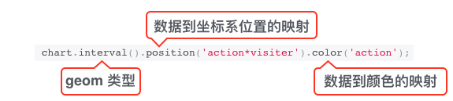
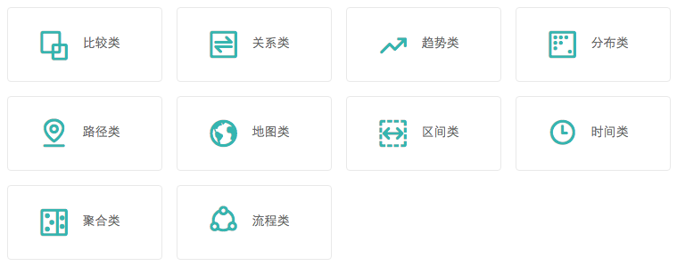

快速上手
什么是 G2
G2(The Grammar Of Graphics) 是一个由纯 javascript 编写、强大的语义化图表生成工具，它提供了一整套图形语法，可以让用户通过简单的语法搭建出无数种图表，并且集成了大量的统计工具，支持多种坐标系绘制，可以让用户自由得定制图表，是为大数据时代而准备的强大的可视化工具。
G2 的特性
1、专业的数据可视化理论基础，从一个更高的视角来审视图表的构成进而提供了一套强大的图形与法，专注于数据到图形的映射，由数据驱动的方式生成可视化形式。
2、语法简单且语义化。G2 的图形语法为我们提供了一套非常自由简洁的创建图表过程，可以说是一句话画图，相比于市面上众多的配置项生成式图表引擎，G2 只需简简单单一句话，以绘制常见的柱状图为例：
var data = [
{action: '访问', visitor: 500},
{action: '浏览', visitor: 400},
{action: '交互', visitor: 300},
{action: '下单', visitor: 200},
{action: '付款', visitor: 100}
];
var chart = new G2.Chart({
id: 'c1',
width : 800,
height : 400
}); // 创建图表
chart.source(data); // 载入数据源
chart.interval().position('action*visitor').color('action'); // 使用图形语法绘制柱状图
chart.render();除去创建对象和载入数据的过程，其核心语法就是如下这句：绘制一张柱状图，以属性 action 的值为横轴，属性 visitor 为纵轴，然后根据不同的 action 属性值区分柱子的颜色。

3、G2 并不是一个特定几个图表的生产库，而是一个绘图工具，提供的是一种自由绘图、组合创造的能力，所有的可视化结果都是由几何图形对象，映射，度量，统计，坐标系等基本图形语法元素排列组合而成，这就决定了用户可以使用这些图形语法元素进行各种各样的组合，创造出属于自己的图表。目前 G2 已经可以绘制出数不清的图表，其中包含了 30 余种常见的图表，还有更多我们都叫不上名字的图表，详见数据图表：

其中所以的图表均使用 G2 绘制，也可以在图表中查看我们的 demo 示例。
4、更简单的可视化改变形式，对于使用者来说，用户仅仅改变非常少的配置就可以实现不同图表之间的切换。比如从柱状图到玫瑰图，用户只需要更改一个坐标系配置。可视化形式的轻松改变可以帮助数据分析人员更佳容易的找到适用于他的数据的形式，进而发现数据中的规律。
5、灵活的皮肤定制机制：详见皮肤。
6、灵活易扩展的插件机制：详见 Plugins。